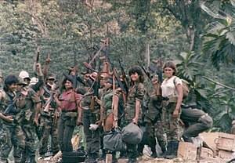

The Actual Contra

Apart from the video game, the name “Contra” is often associated with a late twentieth century Nicaraguan military group of the same name (derived from la contrarrevolución, the Spanish for “the counter-revolution”) . Organized and funded by American President Ronald Reagan during the Cold War, their primary objective was to suppress the expansion of communism in their home country through battling with the Sandinistas (FSLN), a socialist party who had recently overthrown the government and its puppet dictator, Somoza. The most notable impact of the Contra was the damage it dealt to Reagan’s reputation after the Iran-Contra Affair, an incident which sparked widespread controversy when it was discovered that America was funding these soldiers through secret arms deals and profits from the Nicaraguan cocaine trade. The game, while not directly related, was released during the Iran-Contra Affair and reflects the actual Contra through the design of its “jungle” stage (similar to Nicaragua), the naming of its ending theme song as “Sandinista” (the enemy of the Contra), and the possible comparison of terrorist aliens with world-conquering ambitions to socialist revolutionaries.
Pop Culture Inspirations

Contra owes much of its success to the popular science-fiction films that its characters were based off of. These include Alien (1979), which influenced the design of the enemy aliens, Sylvester Stallone in the Rambo franchise, whom Lance is modeled after, and Arnold Schwarzenegger in Predator (1987), whom Bill is modeled after and whose poses in the movie shaped the cover art of the game’s packaging.
The KONAMI CODE

One of Contra’s most significant achievements was the popularization of the Konami code, the infamous cheat activated by entering a specific sequence of buttons on the NES controller. The reward for correctly putting in the code was thirty additional lives. Unfortunately, the creator of the Konami Code, Kazuhisa Hashimoto, has recently passed away (February 2020).
Different Editions
Contra was initially released in 1987 as a coin-operated arcade game, which only contained seven stages and imposed a time limit on the player. Additionally, the European version did not allow multiplayer gameplay. Regarding the NES, the graphics limitations of the popular Nintendo console resulted in the omission of the individual character designs of Bill and Lance, differentiating the two only by the colour of their pants. Contra also varied depending on region, as the Japanese, American, and PAL (Europe, Oceania, south Asia, eastern South America/Africa) versions all have subtle variations. These include the different settings of the Japanese and American editions (discussed in overview), as well as “Probotector,” the adaptation of the game for the PAL region, specifically for audiences in Germany who were not allowed access to the original game because of censorship laws. Probotector’s primary revision to Contra was applying a more robotic appearance (hence the name Probotector: Robot + Protector) to both the protagonists and the aliens to make the game less violent.